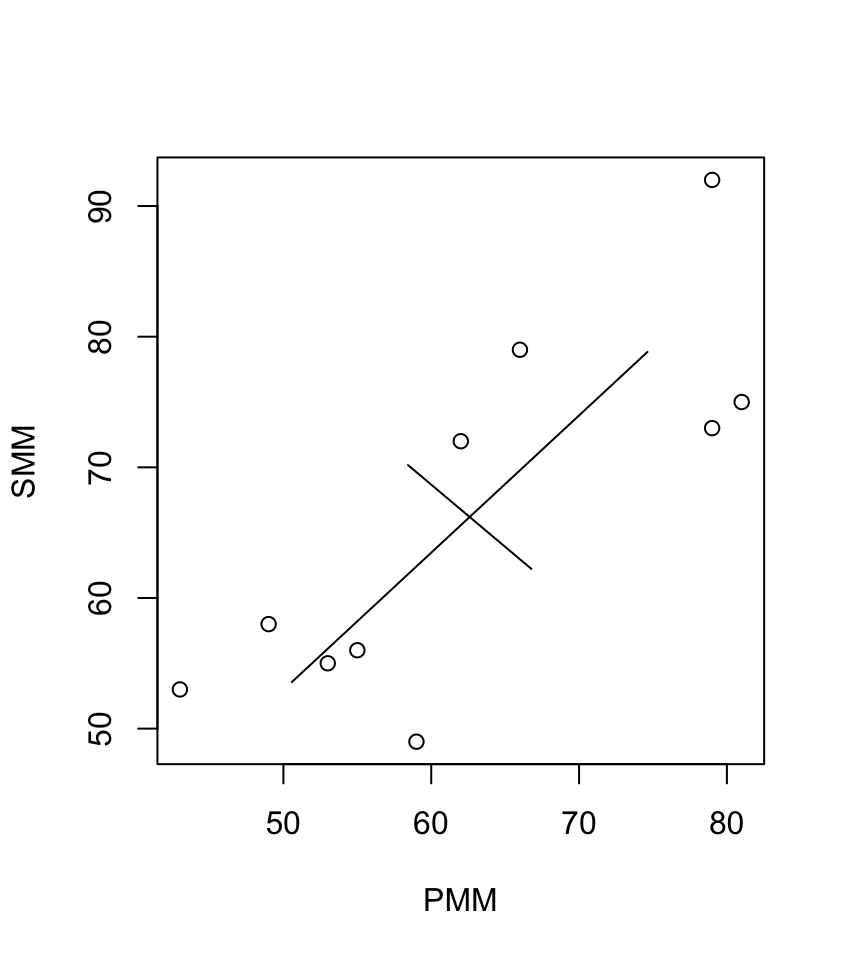

3.1 Principal component vectors and scores
Let \(\boldsymbol x_1,\ldots,\boldsymbol x_n\) be \(p \times 1\) vectors of measurements on \(n\) experimental units with sample mean \(\bar{\boldsymbol x} = \frac{1}{n} \sum_{i=1}^n \boldsymbol x_i\) and sample covariance matrix\ \(\boldsymbol S= \frac{1}{n} \sum_{i=1}^n (\boldsymbol x_i - \bar{\boldsymbol x}) (\boldsymbol x_i - \bar{\boldsymbol x})^\top\).
We wish to project the data onto a lower-dimensional subspace in which the data displays maximal variation, using appropriate scalar products of the observation vectors.
Let \(\boldsymbol u\) be a unit vector (i.e. \(\| \boldsymbol u\| = 1\) or \(\boldsymbol u^\top \boldsymbol u=1\)) and define \[y_i= \boldsymbol u^\top (\boldsymbol x_i - \bar{\boldsymbol x})\] for \(i=1,\ldots,n\).
Now \[ \sum_{i=1}^n y_i = \sum_{i=1}^n \boldsymbol u^\top (\boldsymbol x_i - \bar{\boldsymbol x}) = \boldsymbol u^\top \sum_{i=1}^n (\boldsymbol x_i - \bar{\boldsymbol x}) = \boldsymbol u^\top (n \bar{\boldsymbol x} - n \bar{\boldsymbol x}) = 0,\] by the definition of \(\bar{\boldsymbol x}\), so \(\bar{y} = \frac{1}{n} \sum_{i=1}^n y_i = 0\).
The sample variance of the \(y_i\)’s is \[\begin{eqnarray*} s^2[\boldsymbol u] &=& \frac{1}{n} \sum_{i=1}^n (y_i - \bar{y})^2 = \frac{1}{n} \sum_{i=1}^n y_i^2 \\ &=& \frac{1}{n} \sum_{i=1}^n \left[\boldsymbol u^\top (\boldsymbol x_i - \bar{\boldsymbol x}) \right]\left[(\boldsymbol x_i - \bar{\boldsymbol x})^\top \boldsymbol u\right]\\ &=& \boldsymbol u^\top \left[\frac{1}{n} \sum_{i=1}^n (\boldsymbol x_i - \bar{\boldsymbol x})(\boldsymbol x_i - \bar{\boldsymbol x})^\top \right]\boldsymbol u\\ &=& \boldsymbol u^\top \boldsymbol S\boldsymbol u. \end{eqnarray*}\]
We would like to find the \(\boldsymbol u\) which maximises the sample variance, \(s^2[\boldsymbol u] = \boldsymbol u^\top \boldsymbol S\boldsymbol u\) over unit vectors \(\boldsymbol u\).
Since \(\boldsymbol S\) is symmetric, then by the spectral decomposition theorem we can write \[\boldsymbol S= \boldsymbol Q\boldsymbol \Lambda\boldsymbol Q^\top = \sum_{j=1}^p \lambda_j \boldsymbol q_j \boldsymbol q_j^\top \] with \(\boldsymbol Q= [ \boldsymbol q_1, \ldots , \boldsymbol q_p ]\) an orthogonal matrix (so \(\boldsymbol Q\boldsymbol Q^\top = \boldsymbol Q^\top \boldsymbol Q= \boldsymbol I_p\)) and \(\boldsymbol \Lambda= \text{diag}\{ \lambda_1, \ldots, \lambda_p \}\) where we may assume \(\lambda_1 \geq \cdots \geq \lambda_p\) and, since \(\boldsymbol S\) is a covariance matrix and therefore non-negative definite, \(\lambda_p \geq 0\). Note that \(\lambda_j\) and \(\boldsymbol q_j\), \(j=1,\ldots,p\), are eigenvalues and eigenvectors, respectively, of \(\boldsymbol S\).
Then, \[\begin{eqnarray*} s^2[\boldsymbol u] &=& \boldsymbol u^\top \boldsymbol S\boldsymbol u= \boldsymbol u^\top \boldsymbol Q\boldsymbol \Lambda\boldsymbol Q^\top \boldsymbol u = \boldsymbol u^\top \left(\sum_{j=1}^p \lambda_j \boldsymbol q_j \boldsymbol q_j^\top \right)\boldsymbol u\\ &=& \sum_{j=1}^p \lambda_j (\boldsymbol u^\top \boldsymbol q_j) (\boldsymbol q_j^\top \boldsymbol u) = \sum_{j=1}^p \lambda_j (\boldsymbol u^\top \boldsymbol q_j)^2 \\ &\leq& \sum_{j=1}^p \lambda_1 (\boldsymbol u^\top \boldsymbol q_j)^2 \end{eqnarray*}\] since \(\lambda_1 \geq \lambda_j, j=1,\ldots,p\). Therefore, using Proposition 2.1, \[ s^2[\boldsymbol u] \leq \lambda_1 \sum_{j=1}^p (\boldsymbol u^\top \boldsymbol q_j)^2 = \lambda_1 \boldsymbol u^\top \left ( \sum_{j=1}^p \boldsymbol q_j \boldsymbol q_j^\top \right) \boldsymbol u = \lambda_1 \boldsymbol u^\top \boldsymbol u=\lambda_1,\] since, by assumption, \(\| \boldsymbol u\| = 1\).
Therefore, the maximum \(s^2[\boldsymbol u]\) is at most \(\lambda_1\), where \(\lambda_1\) is the largest eigenvalue of \(\boldsymbol S\).
Recall that \[ \boldsymbol q_i^\top \boldsymbol q_j = \left\{ \begin{array}{ll} 0 & \text{if } j \neq i,\\ 1 & \text{if } j=i. \end{array} \right.\] because eigenvectors are orthogonal to each other, so if we take \(\boldsymbol u= \boldsymbol q_1\) then \[\begin{eqnarray*} \boldsymbol q_1^\top \boldsymbol S\boldsymbol q_1 &=& \boldsymbol q_1^\top \left(\sum_{j=1}^p \lambda_j \boldsymbol q_j \boldsymbol q_j^\top \right)\boldsymbol q_1 = \sum_{j=1}^p \lambda_j (\boldsymbol q_1^\top \boldsymbol q_j) (\boldsymbol q_j^\top \boldsymbol q_1) \\ &=& \sum_{j=1}^p \lambda_j (\boldsymbol q_1^\top \boldsymbol q_j)^2 = \lambda_1 (\boldsymbol q_1^\top \boldsymbol q_1)^2 = \lambda_1 \end{eqnarray*}\]
So \(s^2[\boldsymbol u] = \boldsymbol u^\top \boldsymbol S\boldsymbol u\) is maximised over unit vectors \(\boldsymbol u\) when \(\boldsymbol u= \boldsymbol q_1\) where \(\boldsymbol q_1\) is the unit eigenvector corresponding to the largest eigenvalue, \(\lambda_1\). By maximising \(\boldsymbol u^\top \boldsymbol S\boldsymbol u\) over unit vectors \(\boldsymbol u\), we are in effect choosing a projection onto a 1-dimensional subspace which captures as much of the sample variation as possible.
We can repeat this procedure and look for the largest sample variance of the \(y_i\)’s, when \(\boldsymbol u\) is chosen to be orthogonal to \(\boldsymbol q_1\) (i.e. restrict attention to those \(\boldsymbol u\) such that \(\boldsymbol u^\top \boldsymbol q_1 = 0\)). Similar reasoning shows that this constrained maximum occurs when \(\boldsymbol u= \boldsymbol q_2\), where \(\boldsymbol q_2\) is the eigenvector corresponding to the second largest eigenvalue, \(\lambda_2\); and the corresponding maximum of \(\boldsymbol u^\top \boldsymbol S\boldsymbol u\) is \(\lambda_2\).
We can repeat the process for \(j=1,\ldots,p\) to define \(p\) new variables. In general, to find PC \(j\), we solve the following optimisation problem: \[\begin{equation} \max_{\boldsymbol u: \, \vert \vert \boldsymbol u\vert \vert =1}\boldsymbol u^\top \boldsymbol S\boldsymbol u \tag{3.1} \end{equation}\] subject to \[\begin{equation} \boldsymbol q_k^\top \boldsymbol u=0, \qquad k=1, \ldots , j-1. \tag{3.2} \end{equation}\] It turns out that the maximum of (3.1) subject to (3.2) is equal to \(\lambda_j\) and is obtained when \(\boldsymbol u=\boldsymbol q_j\).
The 1st PC scores are \(y_{i1} = \boldsymbol q_1^\top (\boldsymbol x_i - \bar{\boldsymbol x}), \quad i=1,\ldots,n\). \ The 2nd PC scores are \(y_{i2} = \boldsymbol q_2^\top (\boldsymbol x_i - \bar{\boldsymbol x}), \quad i=1,\ldots,n\). \[ \vdots \] The \(p\)th PC scores are \(y_{ip} = \boldsymbol q_p^\top (\boldsymbol x_i - \bar{\boldsymbol x}), \quad i=1,\ldots,n\).
We summarise these findings in the following result.
Proposition 3.1 Let \(\boldsymbol x_1, \ldots , \boldsymbol x_n\) denote a sample of vectors in \(\mathbb{R}^p\) with sample mean vector \(\bar{\boldsymbol x}\) and sample covariance matrix \(\boldsymbol S\). Suppose \(\boldsymbol S\) has spectral decomposition (see Proposition 2.5) \[ \boldsymbol S=\boldsymbol Q\boldsymbol \Lambda\boldsymbol Q^\top = \sum_{j=1}^p \lambda_j \boldsymbol q_j \boldsymbol q_j^\top, \] where \(\boldsymbol Q\) is orthogonal, \(\boldsymbol \Lambda=\text{diag}\{\lambda_1, \ldots, \lambda_p\}\) and \(\lambda_1 \geq \lambda_2 \geq \lambda_p \geq 0\). Then the following holds:
The maximum of (3.1) subject to (3.2) is equal to \(\lambda_j\) and is obtained when \(\boldsymbol u=\boldsymbol q_j\).
For \(j=1, \ldots , p\), the scores of the \(j\)th principal component (PC) are given by \[ y_{ij}=\boldsymbol q_j^\top(\boldsymbol x_i - \bar{\boldsymbol x}), \qquad i=1, \ldots , n, \] where \(\boldsymbol q_j\) is the vector of loadings for the \(j\)th PC. Moreover, \[ \boldsymbol y_i=( y_{i1}, y_{i2}, \ldots , y_{ip})^\top = \boldsymbol Q^\top (\boldsymbol x_i -\bar{\boldsymbol x}), \qquad i=1, \ldots ,n. \]
In matrix form, the full set of PC scores is given in the matrix \[ \boldsymbol Y= [\boldsymbol y_1 , \ldots , \boldsymbol y_n]^\top =\boldsymbol H\boldsymbol X\boldsymbol Q, \] where \(\stackrel{n \times n}{\boldsymbol H}\) is the centering matrix and \(\boldsymbol X=[\boldsymbol x_1, \ldots , \boldsymbol x_n]^\top\) is the original data matrix.
- The sample mean vector of \(\boldsymbol y_1, \ldots , \boldsymbol y_n\) is the zero vector \({\mathbf 0}_p\) and the sample covariance matrix is \(\boldsymbol \Lambda\).
Example 1.1 We consider the marks of \(n=10\) students who studied G11PRB and G11STA.
## Warning: package 'kableExtra' was built under R version 3.6.2| student | PRB | SMM |
|---|---|---|
| 1 | 81 | 75 |
| 2 | 79 | 73 |
| 3 | 66 | 79 |
| 4 | 53 | 55 |
| 5 | 43 | 53 |
| 6 | 59 | 49 |
| 7 | 62 | 72 |
| 8 | 79 | 92 |
| 9 | 49 | 58 |
| 10 | 55 | 56 |
The sample mean vector and sample covariance matrix are \[ \bar{\boldsymbol x} = \begin{pmatrix} 62.6 \\ 66.2 \end{pmatrix}\qquad \text{and} \qquad \boldsymbol S= \begin{pmatrix} 162.04 & 135.38 \\ 135.38 & 175.36 \end{pmatrix}. \]
## Warning: package 'dplyr' was built under R version 3.6.2##
## Attaching package: 'dplyr'## The following object is masked from 'package:kableExtra':
##
## group_rows## The following objects are masked from 'package:stats':
##
## filter, lag## The following objects are masked from 'package:base':
##
## intersect, setdiff, setequal, unionsecondyr %>% select(2:3) %>% colMeans -> xbar
secondyr %>% select(2:3) %>% cov(use="everything")*9/10 -> S
eigs = eigen(S)DELETE THIS - ASSUME THEY CAN DO IT, OR DO ON A COMPUTER.
To find the eigenvalues we need to solve \(|\boldsymbol S- \lambda \boldsymbol I| = 0\), where \[\begin{eqnarray*} |\boldsymbol S- \lambda \boldsymbol I_2| &=& (162.04-\lambda)(175.36-\lambda) - 135.38^2 \\ &=& \lambda^2 - 337.4 \lambda + 10887.59. \end{eqnarray*}\]
Using the quadratic equation formula we find, \[ \lambda = \frac{337.4 \pm \sqrt{337.4^2 - 4(10087.59)}}{2} = \frac{337.4 \pm \sqrt{73488.4}}{2}. \] So \(\lambda_1 = 304.24\) and \(\lambda_2 = 33.16\).
To find the first eigenvector we solve \((\boldsymbol S- \lambda_1 \boldsymbol I_2) \boldsymbol q_1 = \boldsymbol 0\). To simplify, we use row operations: \[\begin{eqnarray*} \boldsymbol S- \lambda_1 \boldsymbol I_2 = \begin{pmatrix} -142.20 & 135.38 \\ 135.38 & -128.88 \end{pmatrix} &\rightarrow& \begin{pmatrix} 1 & -0.952 \\ 135.38 & -128.88 \end{pmatrix} \\ &\rightarrow& \begin{pmatrix} 1 & -0.952 \\ 0 & 0 \end{pmatrix}. \end{eqnarray*}\] If we let \(\boldsymbol q_1 = (q_{11}, q_{21})^\top\) then solving \((\boldsymbol S- \lambda_1 \boldsymbol I_2) \boldsymbol q_1 = \boldsymbol 0\) is equivalent to solving \[ \begin{pmatrix} 1 & -0.952 \\ 0 & 0 \end{pmatrix} \begin{pmatrix} q_{11} \\ q_{21} \end{pmatrix} = \begin{pmatrix} 0 \\ 0 \end{pmatrix}. \] So \(q_{11} = 0.952 q_{21}\) and the eigenvectors are of the form \(t\begin{pmatrix} 0.952 \\ 1 \end{pmatrix}\) where \(t \ne 0\) is a constant. We choose \(t\) such that \(\| \boldsymbol q\| = 1\), so \[ {\displaystyle t = \pm \frac{1}{\sqrt{0.952^2 + 1^2}} = \pm 0.724}. \] Therefore, \[ \boldsymbol q_1 = 0.724 \begin{pmatrix} 0.952 \\ 1 \end{pmatrix} = \begin{pmatrix} 0.690 \\ 0.724 \end{pmatrix}.\]
To find the second eigenvector we use the same method to solve \((\boldsymbol S- \lambda_2 \boldsymbol I_2) \boldsymbol q_2 = \boldsymbol 0\) and find that \(\boldsymbol q_2 = \begin{pmatrix} -0.724 \\ 0.690 \end{pmatrix}\).
The plot below shows the original data. The two lines, centred on \(\bar{\boldsymbol x}\), have the direction of the eigenvectors, and their lengths are \(2 \sqrt{\lambda_j}\), \(j=1,2\).

We can now compute the PC scores using \[\begin{eqnarray*} y_{i1} &=& \boldsymbol q_1^\top (\boldsymbol x_i - \bar{\boldsymbol x}) = 0.690 (x_{1i} - \bar{x}_1) + 0.724 (x_{2i} - \bar{x}_2) \\ y_{i2} &=& \boldsymbol q_2^\top (\boldsymbol x_i - \bar{\boldsymbol x}) = -0.724 (x_{1i} - \bar{x}_1) + 0.690 (x_{2i} - \bar{x}_2), \end{eqnarray*}\] which gives
FIX FIX Note that these new variables have sample mean \(\bar{\boldsymbol y}=\boldsymbol 0\) and sample covariance matrix (see part 4. of Proposition 3.1) \[ \boldsymbol \Lambda= \text{diag}(\lambda_1,\lambda_2) = \begin{pmatrix} 304.24 & 0 \\ 0 & 33.16 \end{pmatrix}. \] The plot below shows the PC scores \((y_{i1},y_{i2})^\top\). The two lines shown have lengths \(2\sqrt{\lambda_j}\), \(j=1,2\). Note that \(\sqrt{\lambda_j}\) is the standard deviation of the \(j\)th PC.Sometimes the new variables have an obvious interpretation. Note that the first PC gives positive, roughly equal, weight to PRB and STA and thus represents some form of ``average’’ mark. For example, a student that has a high mark on PRB and STA will have a high value for \(y_1\). The second PC, meanwhile, represents a contrast between PRB and STA. For example, a large positive value for \(y_2\) implies the student did much better on STA than PRB, and a large negative value implies the opposite.
Note that we could have chosen \(t=-0.724\) instead of \(t=+0.724\). The only difference would be that the first eigenvector was \(\boldsymbol q_1^\ast = -\boldsymbol q_1\). In this case, a student who scored a high mark on PRB and STA would have a low value for \(y_1\). This is perfectly legitimate but makes the interpretation less intuitive. One can always change the sign of the eigenvectors if it makes interpretation easier. ```